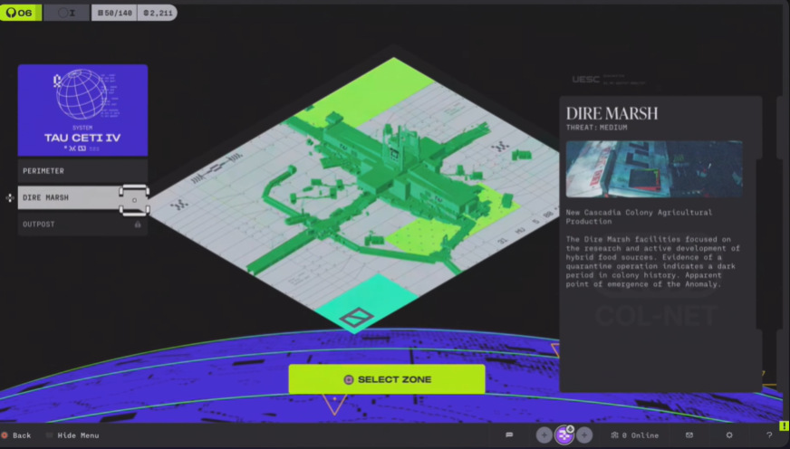
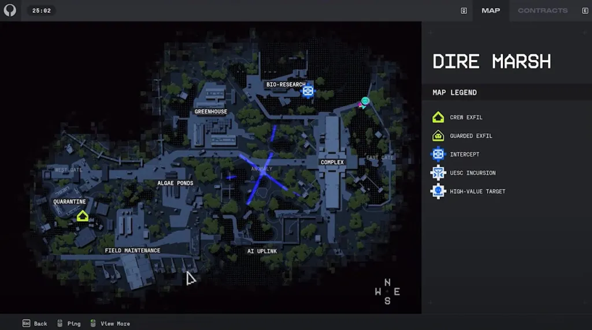

Hệ thống bản đồ trong Marathon (2026) tồn tại ở 2 trạng thái với mục đích sử dụng khác nhau nhằm phục vụ cả giai đoạn chuẩn bị trước trận và điều hướng chiến thuật trong trận.
Cấu trúc đồ họa & Hiển thị: Hiển thị tổng quan bề mặt thuộc địa trên hành tinh Tau Ceti IV (gồm các khu vực Perimeter, Dire Marsh, Outpost) và con tàu UESC Marathon trên quỹ đạo.
Chức năng UX Thực tế: Cung cấp thông tin đầu vào trước trận: mức độ nguy hiểm, yêu cầu cấp độ bảo mật (Security Clearance), điều kiện môi trường và các hợp đồng Faction có thể thực hiện tại bản đồ đó.
Cấu trúc đồ họa & Hiển thị: Loại bỏ hoàn toàn ảnh chụp địa hình 3D rối mắt; sử dụng thiết kế Vector Phẳng Tương phản Cao (Neo-Brutalist Blueprint) với các đường đồng mức địa hình, mặt cắt tòa nhà bê tông và số hiệu khu vực khổ lớn (Sector 01, 02...).
Chức năng UX Thực tế: Giúp người chơi tra cứu nhanh các điểm quan trọng: vị trí điểm thoát hiểm (Crew Exfil, Guarded Exfil), phòng khóa bảo mật (từ cấp 1 đến cấp 5), phòng độc hại (Hazard Room), máy trạm (Terminal) và cho phép đặt điểm đánh dấu (Ping) trực tiếp từ bản đồ 2D ra không gian 3D.

Hiển thị tổng quan hành tinh Tau Ceti IV và tàu UESC Marathon, cung cấp thông số an ninh và điều kiện trước khi triển khai.

Thiết kế Neo-Brutalist Blueprint với đường đồng mức, số hiệu Sector và định vị điểm Exfil, Hazard Room, Security Vault.